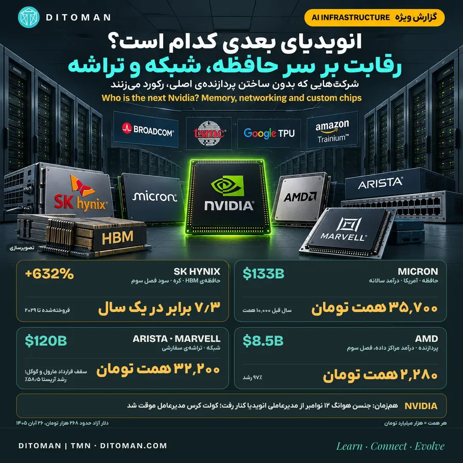
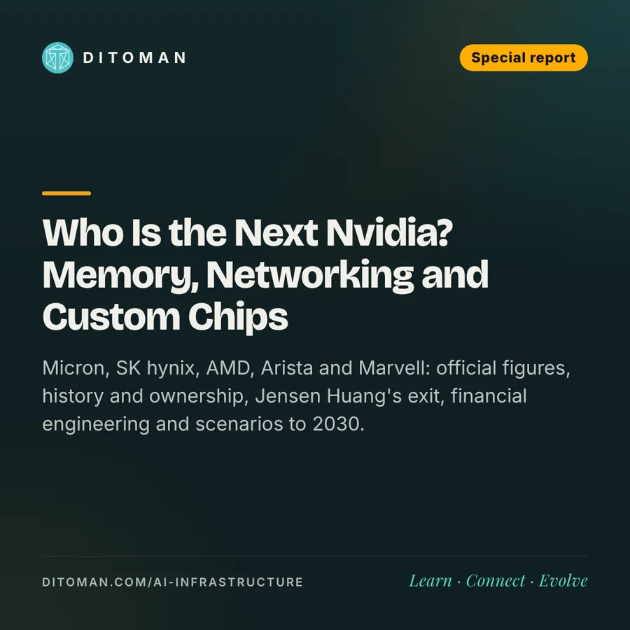
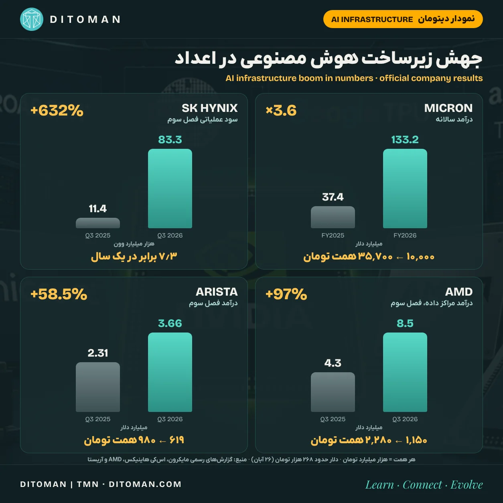
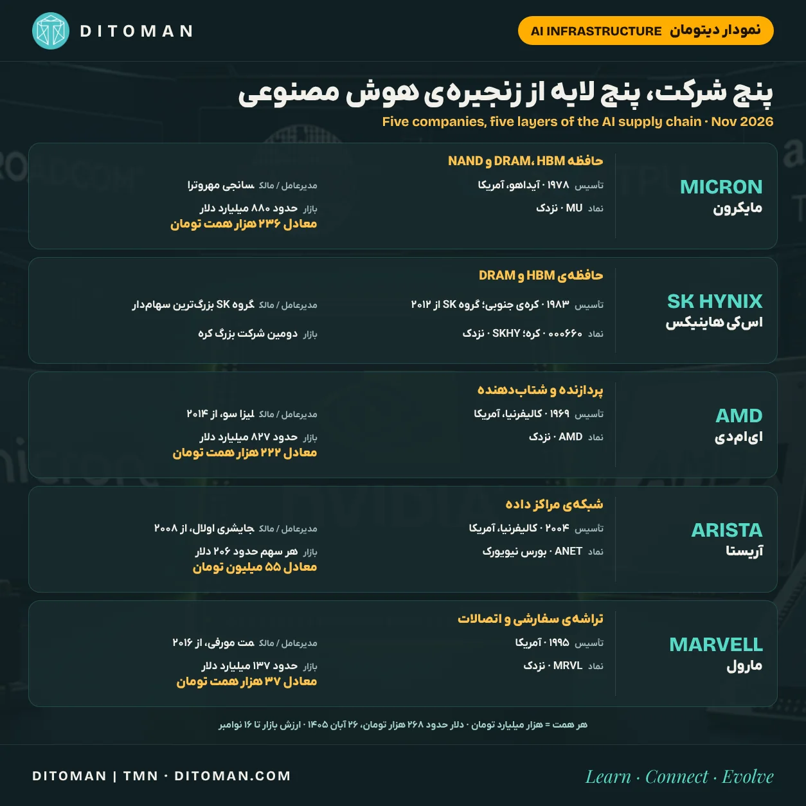

انویدیای بعدی کدام است؟ رقابت میلیارد دلاری بر سر حافظه، شبکه و تراشه
Who is the next Nvidia? The billion-dollar race for memory, networking and chips
مایکرون، اسکی هاینیکس، AMD، آریستا و مارول: ارقام رسمی به دلار و تومان، تاریخچه و مالکیت، کنارهگیری جنسن هوانگ، مهندسی مالی و سناریوها تا ۲۰۳۰.
Micron, SK hynix, AMD, Arista and Marvell: official figures, history and ownership, Jensen Huang's exit, financial engineering and scenarios to 2030.
0. در یک نگاه
برای پول ساختن از انقلاب هوش مصنوعی، لازم نیست بهترین پردازندهی دنیا را بسازید. شرکتهایی که حافظه، شبکه و تراشهی سفارشی مراکز داده را میسازند، حالا رکوردهایی ثبت میکنند که چند سال پیش فقط از انویدیا انتظار میرفت.
و درست در همین روزها، انویدیا با یک شوک مدیریتی روبهروست: جنسن هوانگ، مدیرعامل ۳۳ سالهی انویدیا، ۱۲ نوامبر از مدیرعاملی و هیئتمدیره کنارهگیری کرد (الجزیره).
| شرکت | رکورد تازه | منبع |
|---|---|---|
| مایکرون | درآمد سال مالی ۲۰۲۶: ۱۳۳٫۲ میلیارد دلار؛ سال قبل ۳۷٫۴ میلیارد | گزارش رسمی شرکت |
| اسکی هاینیکس | سود عملیاتی فصل سوم: ۸۳٫۳ هزار میلیارد وون؛ ۶۳۲٪ رشد سالانه | گزارش رسمی شرکت |
| AMD | درآمد مراکز دادهی فصل سوم: ۸٫۵ میلیارد دلار؛ ۹۷٪ رشد | گزارش رسمی شرکت |
| آریستا | درآمد فصل سوم: ۳٫۶۶ میلیارد دلار؛ ۵۸٫۵٪ رشد | گزارش رسمی شرکت |
| مارول | قرارداد تراشهی سفارشی با گوگل؛ سقف ۱۲۰ میلیارد دلار تا ۲۰۳۳ | پروندهی رسمی بورس آمریکا |
همین ارقام به تومان (دلار آزاد حدود ۲۶۸ هزار تومان، ۲۶ آبان ۱۴۰۵؛ هر همت = هزار میلیارد تومان):
| رقم | به دلار | به تومان |
|---|---|---|
| درآمد سالانهی مایکرون | ۱۳۳٫۲ میلیارد | حدود ۳۵٬۷۰۰ همت |
| سود خالص سالانهی مایکرون | ۸۵ میلیارد | حدود ۲۲٬۸۰۰ همت |
| درآمد مراکز دادهی AMD در یک فصل | ۸٫۵ میلیارد | حدود ۲٬۲۸۰ همت |
| درآمد فصلی آریستا | ۳٫۶۶ میلیارد | حدود ۹۸۰ همت |
| سقف قرارداد مارول و گوگل | ۱۲۰ میلیارد | حدود ۳۲٬۲۰۰ همت |
| ارزش بازار مایکرون | ۸۸۰ میلیارد | حدود ۲۳۶ هزار همت |
| ارزش بازار AMD | ۸۲۷ میلیارد | حدود ۲۲۲ هزار همت |
این گزارش آموزشی و تحلیلی است. سیگنال خرید یا فروش سهام نیست و هیچ سهمی را پیشنهاد نمیکند.
1. اول، شوک انویدیا
- چه شد: انویدیا ۱۲ نوامبر ۲۰۲۶ اعلام کرد جنسن هوانگ، بنیانگذار و مدیرعامل از ۱۹۹۳، از مدیرعاملی و عضویت در هیئتمدیره کنارهگیری کرده است
- جانشین موقت: کولت کرس، مدیر مالی انویدیا از ۲۰۱۳، مدیرعامل موقت شده و هیئتمدیره دنبال جانشین دائم است
- دلیل: شرکت دلیلی اعلام نکرد. کنارهگیری پس از گزارشهایی دربارهی روابط شخصی و ادعاهایی دربارهی یک مدیر سابق شرکتی در سنگاپور منتشر شد. هیئتمدیره گفته دلیلی برای به خطر افتادن امنیت ملی نمیبیند
- بازار: سهام انویدیا روز اعلام، در اوج افت، بیش از ۱۴٪ پایین آمد و بعد بخشی از افت را جبران کرد
- چرا مهم است: بزرگترین مشتریان، یعنی غولهای ابری، از قبل دنبال کم کردن وابستگی به یک تأمینکننده بودند. این شوک، توجه بازار را به بقیهی زنجیرهی تأمین هوش مصنوعی بیشتر کرده است
2. چرا رقابت فقط بر سر پردازنده نیست؟
یک مرکز دادهی هوش مصنوعی مثل یک کارخانه است. پردازندهی گرافیکی موتور آن است، اما بدون اینها کار نمیکند:
| لایه | چه میکند | چه کسانی |
|---|---|---|
| حافظهی پرسرعت (HBM و DRAM) | داده را با سرعت بسیار بالا به پردازنده میرساند | اسکی هاینیکس، مایکرون، سامسونگ |
| پردازنده و شتابدهنده | محاسبهی اصلی | انویدیا، AMD، تراشههای اختصاصی گوگل و آمازون |
| تراشهی سفارشی | تراشهای که برای یک مشتری خاص طراحی میشود | برادکام، مارول |
| شبکه | هزاران پردازنده را به هم وصل میکند | آریستا، برادکام، انویدیا |
| ساخت تراشه | تولید پیشرفتهترین تراشهها | TSMC |
| ابر و نرمافزار | اجارهی ظرفیت و بهکارگیری در شرکتها | کورویو، پالانتیر |
اگر یکی از این لایهها عقب بماند، کل مرکز داده کند میشود. برای همین، کمبود حافظه در ۲۰۲۶ همان کاری را با سود سازندگان حافظه کرد که کمبود پردازنده در ۲۰۲۳ با انویدیا کرد.
3. مایکرون؛ از ۳۷ به ۱۳۳ میلیارد دلار

| مشخصه | توضیح |
|---|---|
| تأسیس | ۱۹۷۸، بویزی، آیداهو، آمریکا |
| مدیرعامل | سانجی مهروترا |
| نماد بورس | MU، نزدک |
| مالکیت | شرکت سهامی عام؛ بیشتر سهام در دست صندوقها و نهادهای سرمایهگذاری |
| محصولات | حافظهی DRAM، حافظهی پرسرعت HBM، حافظهی NAND و SSD |
ارقام رسمی سال مالی ۲۰۲۶ (پایان ۳ سپتامبر ۲۰۲۶، گزارش رسمی):
| شاخص | رقم |
|---|---|
| درآمد سالانه | ۱۳۳٫۱۹ میلیارد دلار؛ سال قبل ۳۷٫۳۸ میلیارد (حدود ۳٫۶ برابر) |
| سود خالص | ۸۴٫۹۷ میلیارد دلار |
| درآمد فصل چهارم | ۵۴٫۲۳ میلیارد دلار |
| حاشیهی سود ناخالص فصل چهارم | ۸۶٫۸٪ |
| راهنمای فصل بعد | حدود ۶۱٫۵ میلیارد دلار درآمد |
- سهم: حدود ۷۷۸ دلار در ۱۳ نوامبر؛ ارزش بازار حدود ۸۸۰ میلیارد دلار. از ابتدای سال حدود ۱۷۵٪ بالا رفته، اما حدود ۳۵٪ پایینتر از سقف ژوئن (۱٬۲۵۵ دلار) است (موتلی فول)
- نکتهی تحلیلی: حاشیهی سود ناخالص ۸۷٪ برای یک شرکت حافظه بیسابقه است. بخش بزرگی از این جهش از افزایش قیمت حافظه آمده، نه فقط حجم فروش. حافظه همیشه صنعتی چرخهای بوده: وقتی کمبود تمام شود و ظرفیت تازه برسد، قیمتها میتوانند تند پایین بیایند
4. اسکی هاینیکس؛ تا ۲۰۲۹ فروخته شده
| مشخصه | توضیح |
|---|---|
| تأسیس | ۱۹۸۳ با نام هیوندای الکترونیکس، کرهی جنوبی |
| تغییر نام | ۲۰۰۱ به هاینیکس؛ ۲۰۱۲ خرید توسط گروه SK |
| بزرگترین سهامدار | گروه SK، از طریق SK Square |
| نماد بورس | 000660 در بورس کره؛ از ۱۰ ژوئیهی ۲۰۲۶ با نماد SKHY در نزدک |
| جایگاه | بزرگترین تأمینکنندهی HBM انویدیا؛ دومین شرکت بزرگ کره از نظر ارزش بازار |
ارقام فصل سوم ۲۰۲۶ (گزارش شرکت و ترندفورس):
| شاخص | رقم |
|---|---|
| درآمد | ۱۰۴٫۶ هزار میلیارد وون؛ ۳۲۸٪ رشد سالانه |
| سود عملیاتی | ۸۳٫۳ هزار میلیارد وون؛ ۶۳۲٪ رشد سالانه |
| حاشیهی سود عملیاتی | ۸۰٪، رکورد |
| مشتریان قرارداد بلندمدت | ۱۴ مشتری بزرگ؛ پوشش بیش از ۵۰٪ ظرفیت ۲۰۲۷ و ۲۰۲۸ |
| بازگشت سرمایه به سهامداران | حدود ۱۰۰ هزار میلیارد وون در ۲۰۲۶، شامل سود نقدی و بازخرید سهام |
- ادعای «فروخته شده تا ۲۰۲۹»: خود شرکت گفته عرضهی DRAM و HBM سه سال آینده، تا ۲۰۲۹، «تقریباً تمام فروخته شده است». البته قرارداد بلندمدت با قیمت ثابت فرق دارد؛ قیمتها معمولاً هر سال دوباره مذاکره میشوند
- عرضه در آمریکا: اسکی هاینیکس ۱۰ ژوئیهی ۲۰۲۶ با فروش رسید سپردهی سهام به قیمت ۱۴۹ دلار، حدود ۲۶٫۵ میلیارد دلار جمع کرد؛ سهم در روز اول حدود ۱۳٪ بالا رفت (W.Media)
5. AMD؛ رقیب مستقیم انویدیا
| مشخصه | توضیح |
|---|---|
| تأسیس | ۱۹۶۹، کالیفرنیا |
| مدیرعامل | لیزا سو، از ۲۰۱۴ |
| نماد بورس | AMD، نزدک |
| مالکیت | شرکت سهامی عام؛ بیشتر سهام در دست صندوقها و نهادهای سرمایهگذاری |
| محصولات | پردازندهی EPYC، شتابدهندهی Instinct MI450، رکهای Helios |
ارقام فصل سوم ۲۰۲۶ (گزارش رسمی):
| شاخص | رقم |
|---|---|
| کل درآمد | ۱۳٫۴ میلیارد دلار؛ ۴۵٪ رشد |
| درآمد مراکز داده | ۸٫۵ میلیارد دلار؛ ۹۷٪ رشد، رکورد |
| سود خالص | ۲٫۴ میلیارد دلار |
| حاشیهی سود ناخالص | ۵۴٪ |
| راهنمای فصل چهارم | حدود ۱۷ میلیارد دلار؛ حدود ۶۶٪ رشد سالانه |
- مشتریان: اوپناِیآی، آنتروپیک، متا، مایکروسافت و اوراکل مدلها و بارهای کاری خود را روی اولین رکهای Helios اجرا میکنند
- سهم: حدود ۵۰۴ دلار در ۱۶ نوامبر؛ ارزش بازار حدود ۸۲۷ میلیارد دلار. سهم در هفتهی گذشته پرنوسان بوده؛ ۱۱ نوامبر بیش از ۷٪ بالا رفت و ۱۶ نوامبر حدود ۵٫۶٪ افت کرد
- نکتهی تحلیلی: برتری انویدیا فقط سختافزار نیست؛ نرمافزار CUDA و عادت برنامهنویسان هم هست. موفقیت AMD به نرمافزار، مصرف برق و هزینهی کل مالکیت برای مشتری هم بستگی دارد
6. آریستا؛ شبکهای که پردازندهها را به هم وصل میکند
| مشخصه | توضیح |
|---|---|
| تأسیس | ۲۰۰۴، کالیفرنیا |
| مدیرعامل | جایشری اولال، از ۲۰۰۸ |
| نماد بورس | ANET، بورس نیویورک؛ عرضهی اولیه ۲۰۱۴ |
| محصولات | سوئیچهای پرسرعت اترنت و نرمافزار شبکه برای مراکز داده |
ارقام فصل سوم ۲۰۲۶ (گزارش رسمی):
| شاخص | رقم |
|---|---|
| درآمد | ۳٫۶۶ میلیارد دلار؛ ۵۸٫۵٪ رشد، سریعترین از زمان عرضهی اولیه |
| سود خالص | ۱٫۵۶ میلیارد دلار؛ ۸۲٫۹٪ رشد |
| حاشیهی سود ناخالص | ۶۳٫۶٪ |
| راهنمای فصل چهارم | ۳٫۹ تا ۴ میلیارد دلار |
- ریسک اصلی: بخش بزرگی از فروش به چند مشتری بسیار بزرگ وابسته است؛ و رقابت انویدیا و برادکام در شبکه جدی است
7. مارول و قرارداد گوگل؛ درس مهندسی مالی
| مشخصه | توضیح |
|---|---|
| تأسیس | ۱۹۹۵ |
| مدیرعامل | مت مورفی، از ۲۰۱۶ |
| نماد بورس | MRVL، نزدک |
| محصولات | تراشهی سفارشی، اتصالات نوری و الکترونیکی پرسرعت مراکز داده |
قرارداد گوگل، دقیقاً چیست؟ (فیوچروم)
- تاریخ: قرارداد ۲۹ ژوئیهی ۲۰۲۶ امضا و ۱۹ اوت در پروندهی رسمی بورس آمریکا افشا شد
- موضوع: تراشههای سفارشی کنار پردازندههای اختصاصی گوگل (TPU): شتابدهندهی استنتاج، کنترلر حافظه و ذخیرهسازی، و کارت شبکه
- حق خرید سهام (وارانت): مارول به گوگل حق خرید حدود ۵۹ میلیون سهم با قیمت ۲۰۶٫۵۸ دلار داده؛ حدود ۷٪ کل سهام، با ارزش اعمال حدود ۱۲٫۲ میلیارد دلار، تا اوت ۲۰۳۳
- عدد ۱۲۰ میلیارد از کجا آمد: این حق در ۲۴۰ بخش آزاد میشود؛ هر بخش به ازای هر ۵۰۰ میلیون دلار درآمد از محصولات سفارشی. ۲۴۰ × ۵۰۰ میلیون = ۱۲۰ میلیارد دلار. این سقف است، نه تعهد خرید. قرارداد حداقل خرید یا انحصار ندارد
- چرا این ساختار؟
گوگل هرچه بیشتر بخرد، سهام بیشتری از مارول با قیمت ثابت میگیرد؛ یعنی در موفقیت مارول شریک میشود. برای سهامداران فعلی، این یعنی احتمال رقیق شدن سهام در ازای درآمد بیشتر
- سهم: حدود ۱۵۷ دلار در ۱۳ نوامبر؛ ارزش بازار حدود ۱۳۷ میلیارد دلار؛ بازهی ۵۲ هفتهای ۷۱ تا ۳۳۰ دلار. یعنی سهم حالا زیر قیمت اعمال وارانت گوگل است
8. بقیهی زنجیرهی ارزش
- برادکام: طراحی تراشههای سفارشی برای غولهای ابری و تراشههای شبکه
- TSMC: سازندهی تقریباً همهی شتابدهندههای پیشرفته؛ گلوگاه تولید جهانی
- کورویو: اجارهی ظرفیت پردازش گرافیکی در ابر
- پالانتیر: نرمافزار داده و بهکارگیری هوش مصنوعی در شرکتها و دولتها
- گوگل و آمازون: تراشههای اختصاصی خودشان (TPU و Trainium)؛ هم مشتری این شرکتها هستند و هم رقیبشان
مدل درآمد و ریسک این شرکتها کاملاً متفاوت است؛ مقایسهی رشد فروششان بدون توجه به حاشیهی سود، سرمایهگذاری و قراردادها گمراهکننده است.
9. مقایسه در یک جدول

| شرکت | لایه | رشد اخیر | ارزش بازار تقریبی | ریسک اصلی |
|---|---|---|---|---|
| مایکرون | حافظه | درآمد سالانه ۳٫۶ برابر | ۸۸۰ میلیارد دلار | چرخهی قیمت حافظه |
| اسکی هاینیکس | حافظه HBM | سود عملیاتی ۷٫۳ برابر | دومین شرکت بزرگ کره | چرخهی حافظه، رقابت سامسونگ |
| AMD | پردازنده | مراکز داده ۲ برابر | ۸۲۷ میلیارد دلار | نرمافزار و رقابت انویدیا |
| آریستا | شبکه | درآمد ۵۸٫۵٪ رشد | - | تمرکز مشتری |
| مارول | تراشهی سفارشی | قرارداد تا سقف ۱۲۰ میلیارد | ۱۳۷ میلیارد دلار | زمانبندی، رقیق شدن سهام |
10. مهندسی مالی؛ چه چیزی ارزش سهم را تعیین میکند؟
- رشد درآمد کافی نیست: ارزش سهم به جریان نقد آزاد آینده بستگی دارد: درآمد منهای هزینهها، مالیات و سرمایهگذاری لازم برای کارخانه و تجهیزات
- مثال ساده: اگر سود یک شرکت ۵۰٪ رشد کند ولی بازار به جای ۳۰ برابر سود، فقط ۲۰ برابر برایش بپردازد (نسبت P/E)، ارزش سهم تقریباً ثابت میماند. ۱٫۵ × ۲۰ = ۳۰
- چرا P/E پایین مایکرون فریبنده است: P/E حدود ۱۰ برای شرکتی با این رشد ارزان به نظر میرسد؛ اما بازار برای شرکتهای چرخهای در اوج سود، ضریب پایین میدهد، چون انتظار دارد سود به حالت عادی برگردد
- سرمایهبری: سازندگان حافظه برای هر کارخانهی تازه دهها میلیارد دلار خرج میکنند؛ سود حسابداری بالا لزوماً به معنای نقد آزاد بالا نیست
- وارانت و رقیق شدن: در قراردادهایی مثل مارول و گوگل، باید قیمت اعمال، شرایط آزاد شدن، زمانبندی و اثر رقیق شدن سهام را جدا از درآمد فروش بررسی کرد
- شاخصهای لازم برای ارزشگذاری: ارزش شرکت به سود عملیاتی (EV/EBITDA)، ارزش شرکت به جریان نقد آزاد (EV/FCF)، P/E آینده، بدهی خالص و تعداد سهام پس از رقیق شدن
11. سه سناریو تا ۲۰۳۰
| سناریو | چه اتفاقی میافتد | چه کسی سود میبرد |
|---|---|---|
| رشد پرشتاب | تقاضا سریعتر از عرضه رشد میکند؛ قیمت حافظه و تجهیزات بالا میماند | همهی زنجیره، بهویژه حافظه |
| متعادل | ظرفیت تازه میرسد؛ رشد درآمد ادامه دارد اما حاشیهی سود عادی میشود | شرکتهایی با مزیت نرمافزاری و قراردادهای بلندمدت |
| کندی سرمایهگذاری | بازده پروژههای هوش مصنوعی کمتر از انتظار است؛ مشتریان سفارشها را عقب میاندازند | شرکتهایی با ترازنامهی قوی و تنوع مشتری |
این سناریوها تحلیلاند، نه پیشبینی قطعی.
12. چه چیزهایی را دنبال کنیم؟
- انتخاب مدیرعامل دائم انویدیا و واکنش مشتریان بزرگ
- گزارش انویدیا و راهنمای فروشش
- قیمت قراردادی DRAM و HBM در ۲۰۲۷
- بودجهی سرمایهگذاری غولهای ابری: مایکروسافت، گوگل، آمازون و متا
- اولین درآمدهای واقعی مارول از قرارداد گوگل؛ احتمالاً از سال مالی ۲۰۲۸
13. نگاه دیتومان
«انویدیای بعدی» شاید یک شرکت نباشد؛ یک زنجیره باشد. AMD در پردازش، مایکرون و اسکی هاینیکس در حافظه، آریستا در شبکه و مارول در تراشهی سفارشی، هر کدام بخشی از این زنجیره را در دست دارند.
برنده شدن یک شرکت در هوش مصنوعی، با برنده شدن سهام آن در بورس یکی نیست.
پرسش اصلی این است: وقتی کمبود عرضه تمام شود، کدام شرکت مزیت رقابتی و جریان نقد آزادش را حفظ میکند؟ پاسخ را رشد امروز نمیدهد؛ ساختار کسبوکار، نرمافزار، قراردادها و ترازنامه میدهد.
بیشتر بخوانید
منابع
- Al Jazeera: Why did Nvidia CEO Jensen Huang resign, and who is Colette Kress? (12 Nov 2026)
- Micron: Record fiscal Q4 and full-year 2026 results
- SK hynix: 3Q26 business results
- TrendForce: SK hynix 3Q26 OPM 80%, sold out to 2029
- Financial News: SK hynix three years sold out
- W.Media: SK hynix Nasdaq debut
- AMD: Third quarter 2026 financial results
- Arista Networks: Third quarter 2026 financial results
- Futurum: Marvell and Google, a warrant vesting toward $120B
- Motley Fool: Micron stock (16 Nov 2026)
- Motley Fool: AMD on 11 Nov 2026
- TipRanks: Marvell (MRVL)
- Alanchand: US dollar to toman
آخرین بازبینی: ۲۶ آبان ۱۴۰۵. ارقام شرکتها از گزارشهای رسمی است؛ قیمت سهام و نرخ دلار تقریبی و متعلق به تاریخ ذکرشدهاند. این گزارش آموزشی است و سیگنال خرید یا فروش سهام نیست.